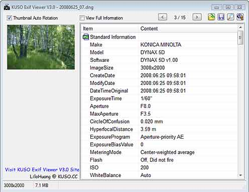
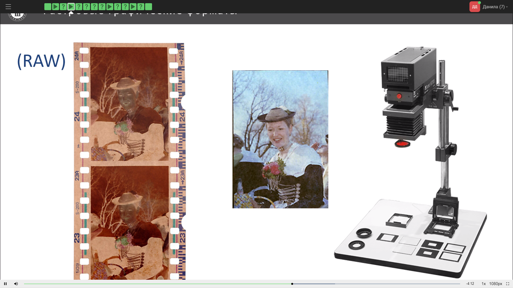
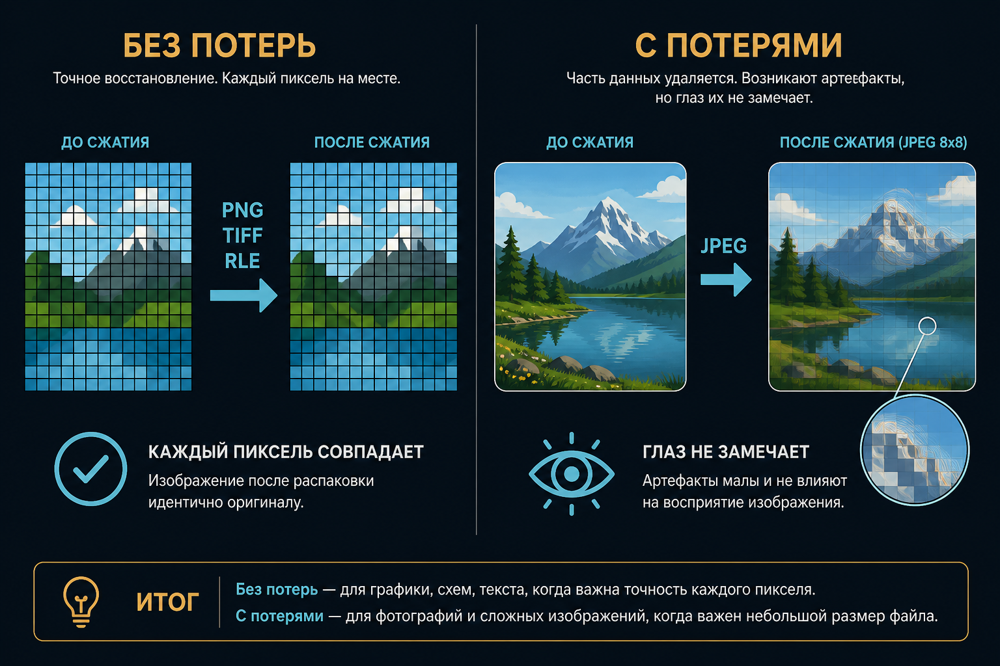
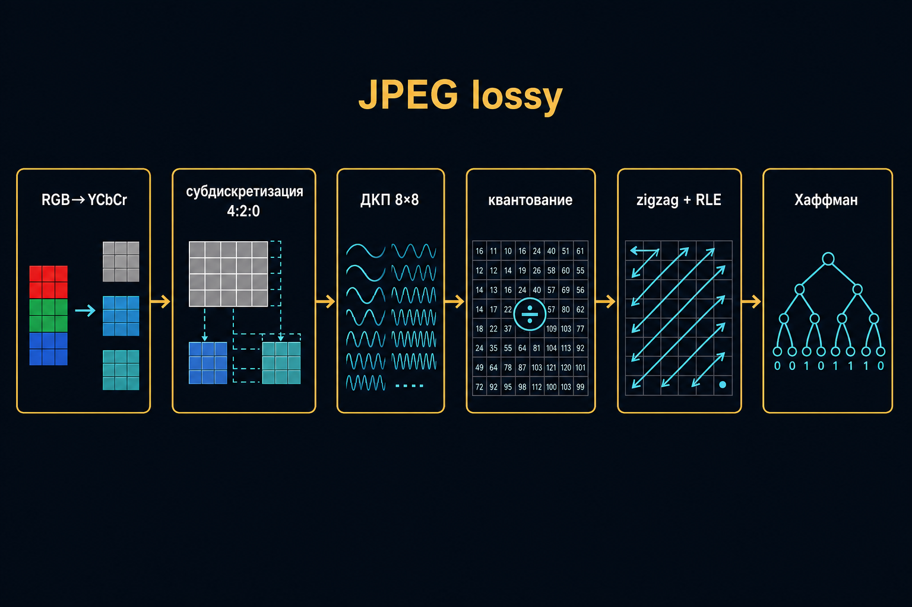
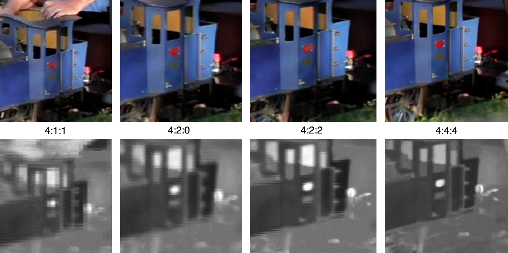
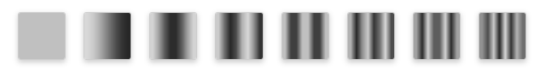
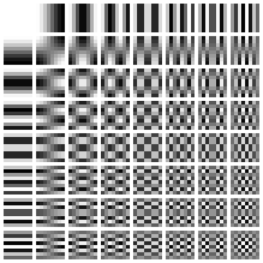

Форматы и сжатие
Ф05 · JPEG TIFF PNG RAW · потери / без потерь
Не путать
- метод — идея (RLE)
- алгоритм — конкретные шаги
- формат — порядок байт в файле
- расширение — подсказка ОС
- кодек / контейнер — в видео
JPEG-сжатие может жить внутри TIFF
Формат файла
Структура данных в именованной области памяти. Задаёт размер и то, что ещё можно править.
BMP и GIF
- BMP — RGB, без альфы, разве что RLE
- GIF — 256 цветов, LZW, одна прозрачность, анимация
Схемы и кнопки — да · фото — нет
JPEG
Полноцвет, сжатие с потерями, без прозрачности, есть EXIF. Лидер фото с 1990-х.


PNG
Deflate без потерь, глубокий цвет или палитра, альфа-канал. Тяжелее JPEG на фото, незаменим на графике.
TIFF
Теги, профили, маски, много страниц. Сжатие на выбор: LZW/ZIP или JPEG внутри — потери не исчезают.
GeoTIFF — проекция, датум, аффинное преобразование
RAW
Семейство сырых отсчётов после АЦП, не единый формат. DNG — попытка Adobe.
ББ и кривой ещё нет. Битность часто 12–14. Дискретизация уже случилась.


Метаданные Exif
Камера, t, K, ISO, вспышка, f, ориентация, ББ, иногда координаты. Для серии АФС — не украшение.
С потерями и без

Без потерь
- RLE — серии повторов: WWWWW → W5
- LZW — словарь, GIF/TIFF
- Deflate — LZ77 + Хаффман, PNG
На фото типичный выигрыш 1,5–4 раза
Конвейер JPEG

Субдискретизация
Y отдельно, цветности реже. Глаз к цвету слепее. 4:2:2 ≈ ⅔ от 4:4:4.

ДКП 8×8
Низкие частоты — смысл. Высокие — шум и мелкий контраст. Квантование — здесь крутят «качество».



Цена JPEG
Сетка блоков, нет альфы, повторное пересохранение копит артефакты.

Дальше по вебу
- WebP — часто легче JPEG, умеет альфу
- HEIF / BPG — сильнее, лицензии мешают
- PDF — электронная распечатка, не Word
Для модели
Серия, с которой ещё считаете стерео: RAW или TIFF без потерь. Показ заказчику — JPEG.
Вопросы
- Формат vs алгоритм — пример?
- JPEG / TIFF / PNG / RAW — потери и задача?
- Что в RAW уже сделал АЦП?
- Зачем YCbCr и 8×8?
- Какой файл для стереопары?